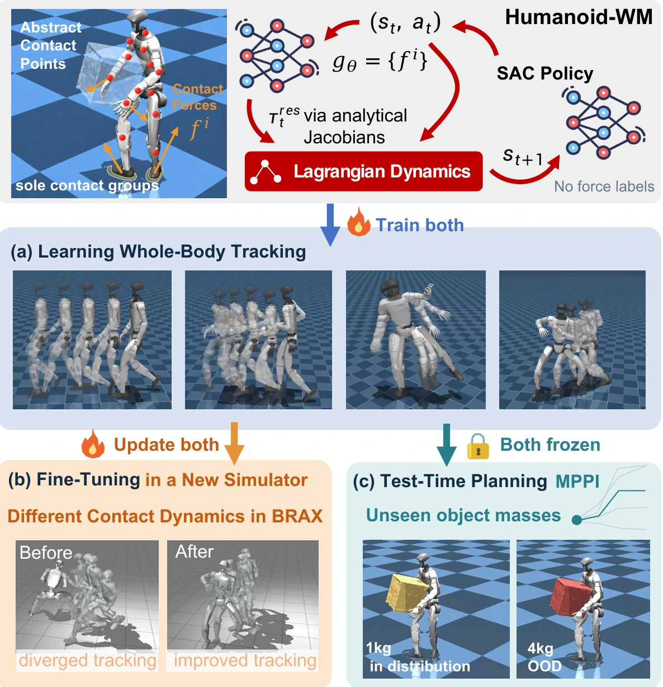
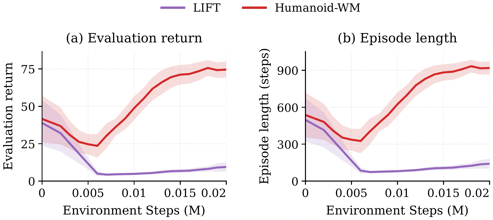
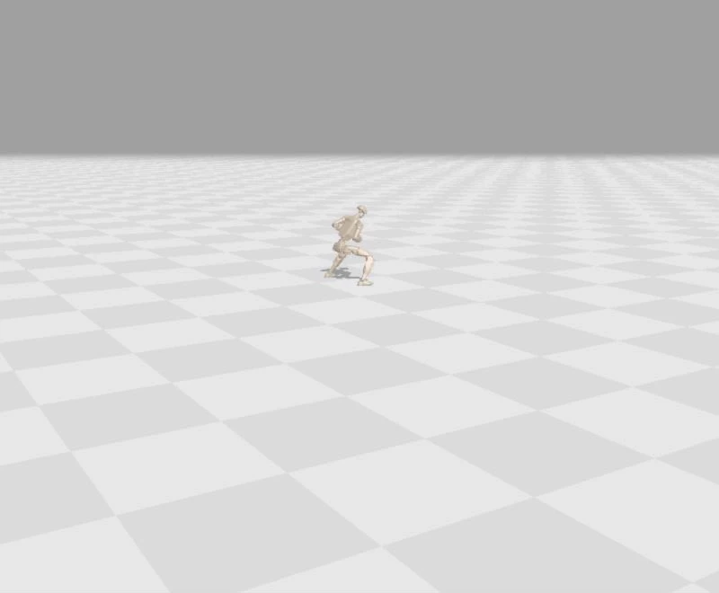
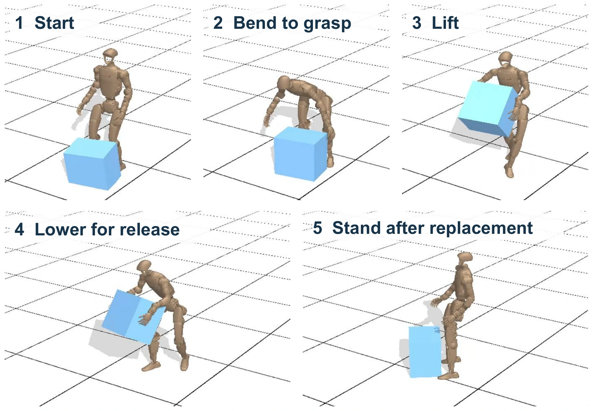
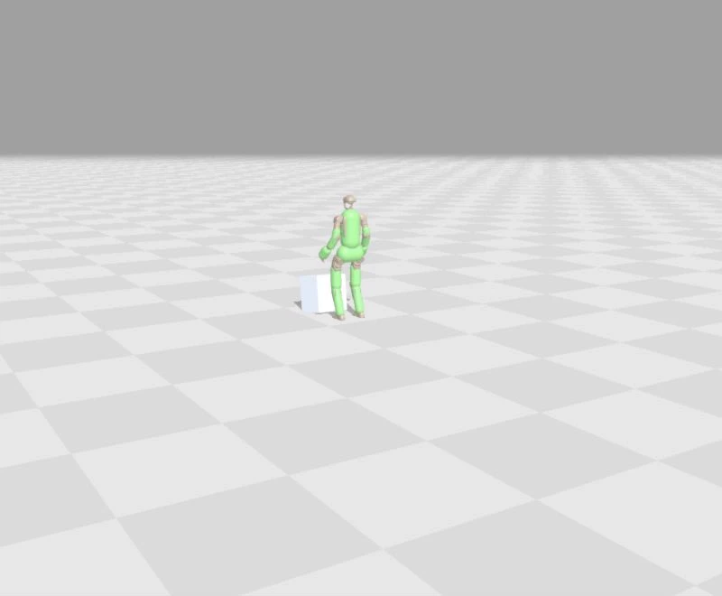
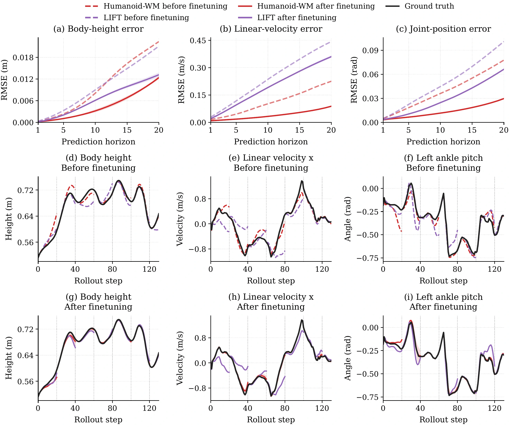

Overview

One world model. Three capabilities.
Learn the interactions.
Keep the physics.
Predict contact forces instead of learning whole-body dynamics from scratch. Humanoid-WM combines learned interactions with analytical rigid-body dynamics to support learning and planning.
- 01
Learn from scratch
Train whole-body tracking policies with limited environment interaction.
- 02
Adapt with limited data
Fine-tune the policy and world model after transfer to a new simulator.
- 03
Plan at test time
Improve action selection under unseen object masses with both components frozen.
Overview. Abstract body contact points provide a shared representation for whole-body policy learning, simulator adaptation, and model-predictive control. All experiments presented here are conducted in simulation.
Abstract
Humanoid robots offer a versatile platform for general-purpose agents, yet learning robust control policies remains highly sample-inefficient. Model-based reinforcement learning can improve sample efficiency, but conventional world models often overlook the physical structure of humanoid bodies, requiring substantial interaction data to learn generalizable dynamics.
We propose Humanoid-WM, a physics-informed world model that incorporates Lagrangian dynamics and represents humanoid-environment interactions through abstract contact points defined on the robot body. Rather than directly predicting state transitions, Humanoid-WM predicts forces at these contact points and integrates them into the dynamics, providing a contact-aware inductive bias for modeling whole-body motion.
Experiments demonstrate three key capabilities: sample-efficient learning of diverse whole-body motion-tracking policies from scratch; efficient fine-tuning of both policy and world model in new environments; and test-time planning via Model Predictive Path Integral (MPPI) control without fine-tuning either component. Test-time planning improves success rates and tracking performance under unseen object masses.
The model
A Contact-Aware World Model
Known mechanics handle rigid-body motion. A learned model supplies the interaction forces.
01 / Predict
Latent contact forces
Predict a 3D Cartesian force at each predefined abstract body contact point.
02 / Map
Analytical Jacobians
Map point forces into a configuration-dependent generalized-force residual.
03 / Integrate
Lagrangian dynamics
Combine the residual with known rigid-body dynamics and the actuator model to predict the next state.
Trained end to end from state transitions. No direct force supervision.
01 / Learning
Sample-Efficient Whole-Body Control
Learning Run, Walk, and Jump from scratch in Isaac Sim, using reference motions from LAFAN1. Each row pairs evaluation returns with training-progress videos from Humanoid-WM, LIFT, and MBPO. An additional Fight experiment is shown separately below.
LIFTMBPOHumanoid-WMPPOSAC
Evaluation returns averaged over eight random seeds. The horizontal axis uses a piecewise-linear scale, expanding 0–0.2M and compressing 0.2–20M environment transitions. Model-generated transitions are excluded. Video training budgets are shown by the embedded environment-step labels.
Run
Walk
Jump
Fight · Additional experiment
Additional reference motion
Training from scratch on the Fight trajectory.
A separate experiment, shown as a three-method video comparison.
About 100× fewer environment interactions
Humanoid-WM attains strong tracking returns with approximately 1/100 as many interactions as the model-free baselines. SAC and PPO can reach comparable or higher final returns. Humanoid-WM outperforms LIFT on Run and Walk and performs comparably on Jump.
02 / Adaptation
Fine-Tuning in a New Simulator
Transfer a pretrained G1 fighting-motion policy from MuJoCo Playground to Brax, then update both the policy and world model with limited target-environment data.

After an initial performance drop, Humanoid-WM recovers to a high evaluation reward and longer episodes. The explicit mapping from local forces to generalized forces supports adaptation on a task with irregular, nonperiodic contact transitions.
Interactive Fine-Tuning Demonstrations
Load a 3D demo to play the trajectory and rotate or zoom the camera.
Step 0 · Before fine-tuning · Shared checkpoint for Humanoid-WM & LIFT
20,000 steps
Humanoid-WM

LIFT

03 / Test-time planning
Frozen Models. Better Action Selection.
MPPI uses Humanoid-WM to evaluate candidate action sequences for box carrying and placement under unseen object masses, without retraining the policy or world model.

58.5%
Deterministic policy
66.6%
MPPI · K = 5,000
+8.1 pp
Overall success improvement
| Method | 1 kg Training mass | 2 kg | 3 kg | 4 kg | Overall |
|---|---|---|---|---|---|
| Policy (deterministic) | 95.0 | 76.6 | 49.2 | 13.2 | 58.5 |
| Policy (stochastic) | 91.6 | 85.0 | 34.8 | 6.0 | 54.4 |
| MPPI · K = 512 | 93.6 | 90.6 | 55.6 | 15.2 | 63.7 |
| MPPI · K = 5,000 | 92.6 | 92.2 | 62.0 | 19.8 | 66.6 |
| MPPI · K = 30,000 | 91.6 | 90.8 | 60.4 | 20.8 | 65.9 |
Selected settings from the manuscript. Overall 95% confidence intervals: deterministic policy, 56.3–60.6%; MPPI K = 5,000, 64.6–68.7%. The deterministic policy remains strongest at the training mass; MPPI K = 5,000 improves success at all three heavier masses.
Box Carrying: Policy vs. MPPI Planning
Interactive rollouts with 1, 2, 3, and 4 kg boxes. Compare the deterministic policy with MPPI planning (K = 30,000). Click to load each trajectory, then rotate or zoom the camera; playback controls are in the viewer's Controls menu.
1 kg · Training mass
Policy

MPPI Planning

2 kg
Policy

MPPI Planning

3 kg
Policy

MPPI Planning

4 kg
Policy

MPPI Planning

Planning budget and inference time
Larger planning populations generally improve success, but the gains are not monotonic. K = 5,000 gives the highest observed overall success; increasing K to 30,000 improves the 4 kg result but does not improve overall success.
With horizon H = 12 on a single NVIDIA RTX 4090, model-inference time is 145.32 ms/step for K = 5,000 and 675.07 ms/step for K = 30,000. These are per-step model-inference measurements, not end-to-end real-time control rates.
Model analysis
Accurate Multi-Step Predictions
Compare Humanoid-WM and LIFT before and after fine-tuning on the same Brax data, with the policy held fixed.


After fine-tuning, Humanoid-WM achieves lower mean 20-step RMSE across all three reported state groups: body height, base linear velocity, and joint position.